機器の認証情報を暗号化して守るための、最初の1回だけの設定です。
配布物は PalaTerm-vX.Y-win64.zip です。展開してできた PalaTerm フォルダごと好きな場所（例: C:\Tools\PalaTerm）に置き、中の PalaTerm.exe をダブルクリックで起動します（インストール不要）。vault・ログ・書き出しはこのフォルダの中に作られるので、デスクトップに exe を直接置くより散らかりません。更新は新しい PalaTerm.exe でフォルダ内の exe を置き換えるだけです。
ソース一式のフォルダから使う場合は build\bin\PalaTerm.exe が本体です —
別の場所にある同名ファイルを起動すると「Wails applications will not build...」というエラーになります。
PalaTerm は機器のパスワードや enable パスワードを マスターパスワードで暗号化して保存します（平文では一切保存しません）。 初回起動時にこのマスターパスワードを決めます。
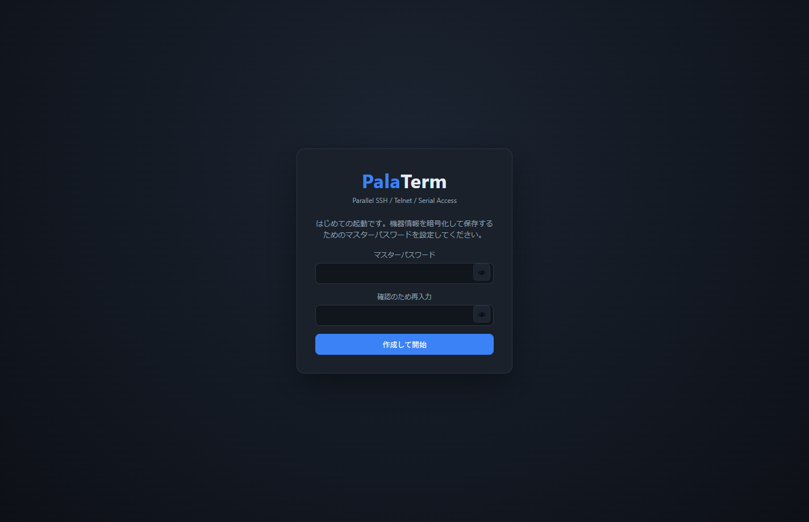
2回目以降の起動では、このマスターパスワードを入力してロック解除するだけになります。暗号化ファイルは data\palaterm_vault.enc に作られます。
PalaTerm.exe の隣に、次のフォルダが自動で作られます。
| フォルダ | 中身 |
|---|---|
logs\ | 実行ログの保存先（既定。ログ設定で変更可） |
export\bundles\ | 「一式書出」の出力先。グループ名ごとのフォルダに 機器CSV（devices.csv）＋コマンドセット＋OSタイププロファイル＋目録（palaterm-bundle.json） |
export\command-sets\ | コマンドセット単体ファイル読込の既定フォルダ |
export\os-profiles\ | OSタイププロファイル単体ファイル読込の既定フォルダ（標準15種のJSONを自動配置。アプリが消すことはない） |
data\ | 暗号化された保存データ（palaterm_vault.enc） |
持ち運びできます。 PalaTerm.exe と data\ フォルダを一緒にUSBや共有フォルダへコピーすれば、別のWindowsでもそのまま同じ設定で使えます。インストールは不要です。
exe の外に作られるもの。 PalaTerm 自身のデータ（vault・ログ・書き出し）はすべて上の表のとおり exe の隣に作られます。唯一の例外は画面描画に使う WebView2 ランタイム自身のブラウザキャッシュで、Windows が %APPDATA%\PalaTerm.exe\EBWebView\ に作ります（PalaTerm のデータは含まれません）。レジストリやシステムフォルダには何も書きません。アンインストールは exe のフォルダを削除するだけで済みます（必要ならこのキャッシュフォルダも削除してください）。
操作は「コマンドを決める → 機器を登録する → 実行する」の3ステップです。
① コマンドセットを作る … 各機器で流したいコマンド（例: show running-config）をまとめて登録します。サンプル6種が最初から入っています。
② 機器を登録する … 接続先のIP・接続方式・OSタイプ・認証情報をグループ（会社）単位で登録し、①のコマンドセットを割り当てます。
③ 一括実行する … 実行画面でグループを選び、チェックした機器へ並列で接続してログを自動保存します。
画面左のサイドバーには5つのタブがあります。
| タブ | 役割 |
|---|---|
| 機器一覧 | グループと機器の登録・編集・一式書出/読込（機器CSV＋コマンドセット＋OSタイププロファイル） |
| コマンドセット | 流すコマンドのまとまりの作成・単体ファイル読込 |
| 実行 | 対象の選択と一括実行・結果の確認 |
| ログ設定 | 並列数・タイムアウト・ログ保存先などの共通設定 |
| OSタイプ設定 | 機種別ログイン自動化プロファイルの管理 |
サイドバー下部には言語切替・パスワード変更・リセット・バージョン情報・ロックがあります。
| メニュー | 説明 |
|---|---|
| 言語切替 | UIの言語を切り替えます（既定は英語。🌐 日本語 を選ぶと日本語に）。選択は保存され、次回起動時も維持されます。 |
| パスワード変更 | マスターパスワードを変更します（現在のパスワード → 新しいパスワード → 確認入力）。 |
| バージョン情報 | ツール名・バージョン・作者・ライセンスの表示。 |
| ロック | マスターパスワード入力画面に戻ります。 |
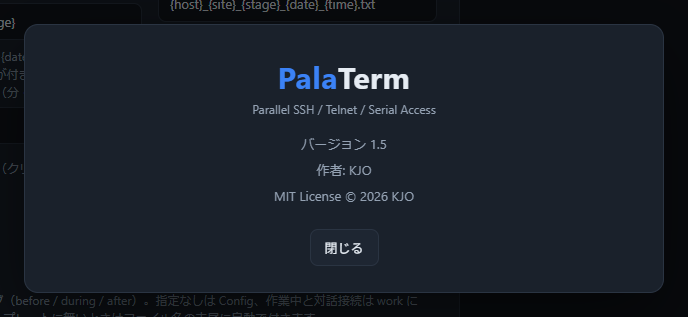
一覧のボタンは全画面共通で、機能ごとに色が決まっています。
機器一覧・コマンドセット・OSタイプ設定の一覧、およびコマンドセット編集・ログイン手順の行は、 左端の ⠿ ハンドルをドラッグして並び替えできます。並び順は保存され、コマンドセットやOSタイプの選択リストの順序にも反映されます。
複数行をまとめて移動するには、⠿ をクリックで選択、Ctrl＋クリックで追加選択、 Shift＋クリックで範囲選択してから、選択中のいずれかの行をドラッグします（選択した行が相対順を保ったまま一括で移動します）。
画面のあちこちにある ⓘ マークにマウスを乗せると、その項目の説明がその場で表示されます。迷ったらまず ⓘ を見てください。
機器に流すコマンドのまとまりです。用途ごとに複数作れます（例: 設定バックアップ用、障害調査用）。
最初からサンプル6種（【サンプル】Cisco_ルータ / Cisco_L2SW / Cisco_L3SW / FortiGate / IXルータ / ALAXALA_L2SW）が入っています。そのまま使うことも、複製して自分用に直すこともできます。新しい版で増えたサンプルは、既存の vault にもロック解除時に 1 回だけ追加されます（削除すれば戻りません。同名のセットが既にあれば触りません）。
config-backup）。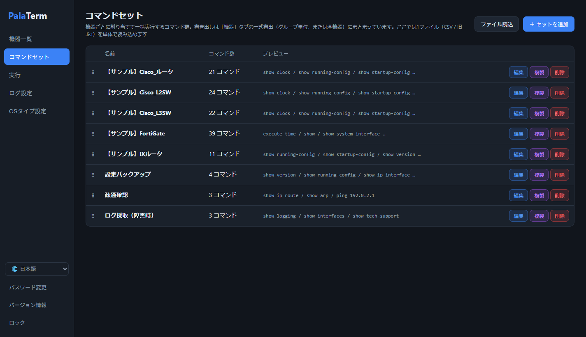
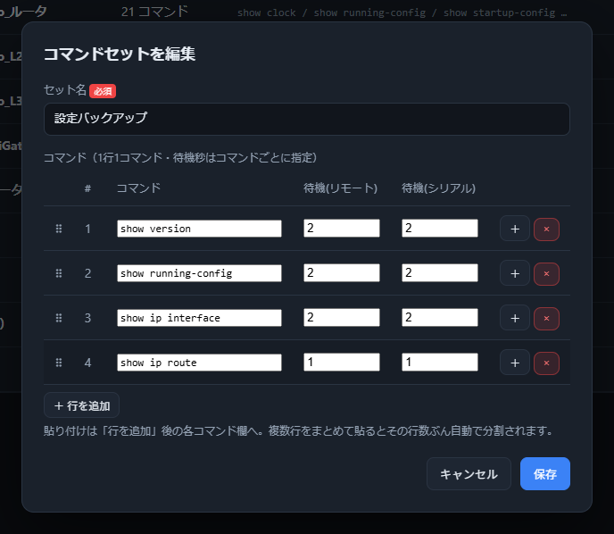
各行は「コマンド ＋ 待機(リモート) ＋ 待機(シリアル)」の形です。例（Cisco IOS の設定バックアップ）:
| コマンド | 待機(リモート) | 待機(シリアル) |
|---|---|---|
show running-config | 2 | 3 |
show version | 1 | 1 |
show ip interface brief | 1 | 1 |
コマンド欄に複数行をまとめて貼り付けると、その行数ぶん自動で行が分割されます。enable や terminal length などのログイン・ページャ処理は自動（OSタイプ設定のプロファイルが担当）なので書く必要はありません。show 系のコマンドだけ並べればOKです。
「読込」で1ファイルを選んで取り込みます（コマンド,リモート秒,シリアル秒 形式。ファイル名がセット名になり、同名セットは置き換え）。
CSVのほか、同じ形式の .list / .txt ファイル（旧ツールの Show_Command_Pattern）もそのまま読み込めます。
書き出しは機器一覧タブの「一式書出」にまとまっています（機器が使うセットが export\bundles\グループ名\command-sets\ に1セット1ファイルで入り、「全機器」なら全セット）。
接続先の情報を1台ずつ登録します。名前・ホスト・接続方式・OSタイプ・認証情報を設定します。
グループ（会社）単位で管理します。 「機器一覧」タブを開くと、まずグループ選択画面が表示されます。「＋ 新規グループ作成」で会社・拠点などのグループを作るか、既存グループを選ぶと、その範囲の機器一覧に移ります。上部の「← 対象選択」でいつでも戻れます。他のタブへ移動して戻ってきても、選んでいたグループは維持されます。
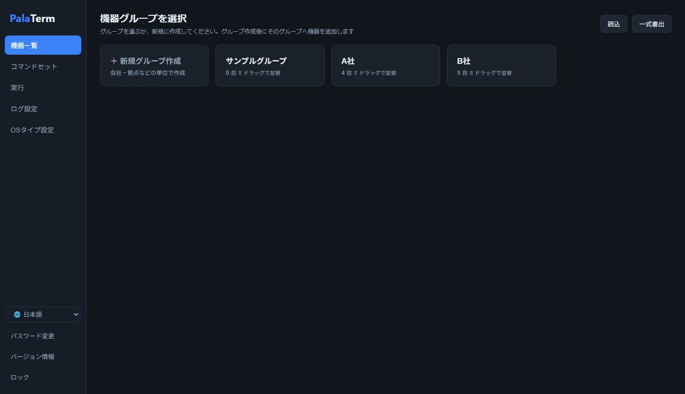
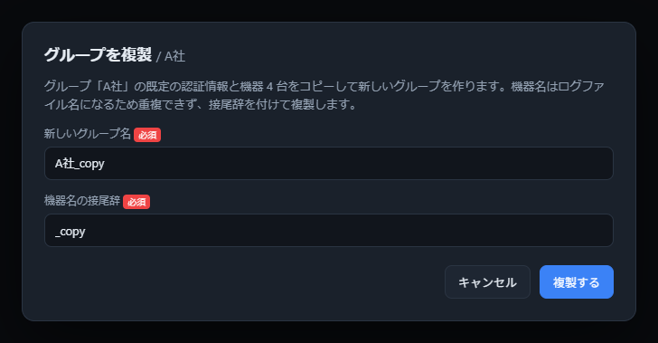
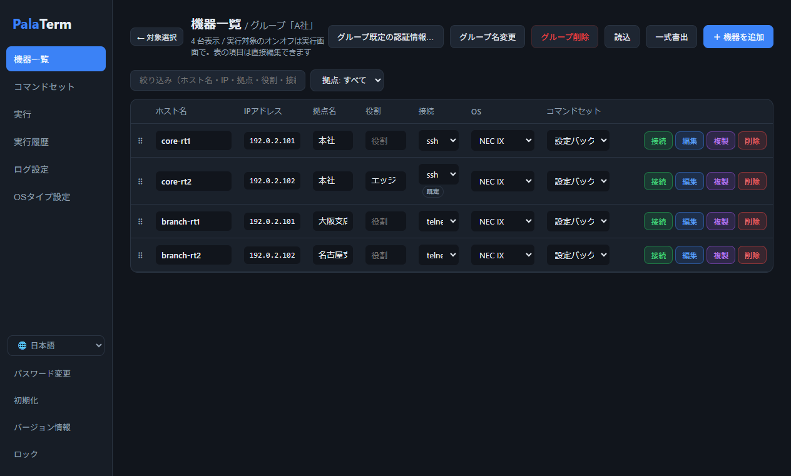
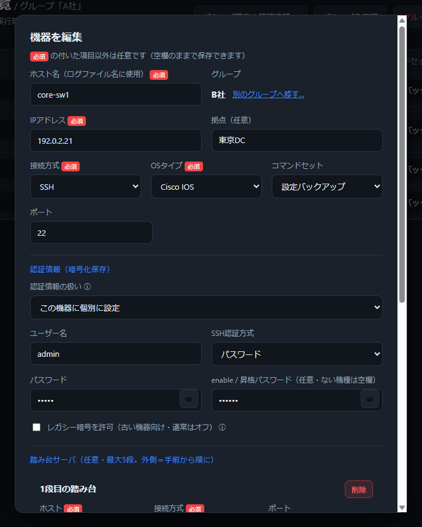
グループ一覧の画面では、各グループの機器台数が表示され、カードをドラッグして並び順を変更できます。 グループ内の一覧では、上部の「グループ名変更」「グループ削除」が使えます（削除しても機器自体は残り、グループ未設定になります）。
| 項目 | 説明 |
|---|---|
| ホスト名 必須 | 機器の識別名。ログファイル名に使われます（例: core-sw1）。 |
| IPアドレス 必須 | 接続先のIPアドレスまたはホスト名。（シリアル接続時は不要） |
| 拠点名（任意） | 本社／東京DC など。ログファイル名（{site}）にも使えます。 |
| 役割（任意） | コア／エッジ／FW など、機器の役割を表す自由なラベル。ログファイル名（{role}）にも使えます。 |
| 接続方式 | SSH / Telnet / シリアル から選択。ポートは自動入力（SSH=22 / Telnet=23、変更可）。シリアルはCOMポートをドロップダウンで選択＋ボーレート（既定9600）。「自動検出」のままで動くのは USB シリアル変換が 1 本だけ（または COM ポートが 1 つだけ）のとき。変換ケーブルが 2 本以上あるときは「COMポートを指定してください」と止まるので、機器ごとに別の COM ポートを指定します（指定すれば複数本を同時に使えます）。 |
| OSタイプ | ログイン自動化のプロファイル（OSタイプ設定参照）。enable昇格やページャ無効化を機種に合わせて自動で行います。 |
| コマンドセット | STEP3で作ったセットを割り当てます。 |
| 項目 | 説明 |
|---|---|
| ユーザー名 | ログインユーザー。 |
| パスワード | ログインパスワード。目のマークで表示/非表示を切替できます。 |
| enable / 昇格パスワード（任意） | 特権モードへ上がるためのパスワード（Cisco の enable など）。不要な機器は空欄でかまいません。 |
| SSH認証方式 | SSH接続時のみ。パスワード か 公開鍵（Ed25519 / RSA / ECDSA に加え、古い踏み台向けの DSA（PEM 形式 / OpenSSH 形式とも）も可）を選択。公開鍵では「参照…」で鍵ファイルを選択でき、前回使ったパスが自動入力されます。パスフレーズ付きの鍵は「秘密鍵のパスフレーズ」欄に入力してください（暗号化保存）。Tera Term マクロの /auth=publickey /keyfile=… /passwd=… と同じ設定で、/passwd の値はパスワード欄ではなく「鍵のパスフレーズ」欄に入ります。接続先が公開鍵しか受け付けないのにパスワードを選んでいると「サーバがパスワード認証を受け付けていません」と表示されます。 |
| 認証情報の扱い | グループに所属する機器にだけ出ます。「グループ既定を使う」にすると、ユーザー名・パスワード・enable パスワードはグループ既定の認証情報（下記）が使われ、この機器の欄は使われません。同じグループでもパスワードが違う機器は「この機器に個別に設定」のままにします。 |
会社ごとに共通のログインアカウントを使っている場合、グループの機器一覧の上部にある「グループ既定の認証情報…」で、そのグループのユーザー名・パスワード・enable パスワードを一度だけ登録できます（暗号化保存）。 機器側は編集画面の「認証情報の扱い」を「グループ既定を使う」にします。一覧では既定のバッジが付きます。ダイアログの「このグループの全機器を切り替える」にチェックすると、グループ内の機器をまとめて既定に切り替えられます。 グループ既定を使う機器も、個別のパスワードが必要な機器だけ「この機器に個別に設定」に戻せば、その機器は自分の認証情報でログインします。一式書出・読込にもグループ既定は含まれます。
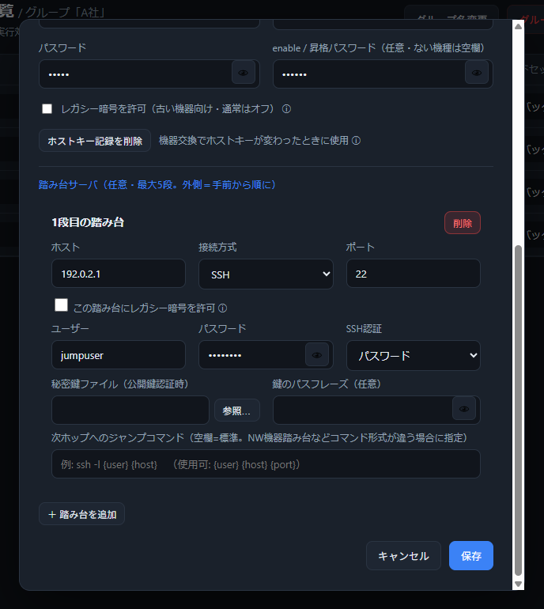
「＋ 踏み台を追加」で、踏み台（ジャンプサーバ）を最大5段まで登録できます。
外側（手前）から順に並び、1段目→2段目→…→対象機器 の順に経由します。各段ごとに接続方式（SSH / Telnet）・
ホスト・ユーザー・パスワードを設定します（1段目のSSHは公開鍵認証・レガシー暗号の許可も可）。
2段目以降と対象機器へは、手前の踏み台のシェルで ssh / telnet コマンドを打って進むため、その認証は手前の踏み台側の ssh クライアントが行います。PalaTerm に登録した鍵ファイルが使われるのは1段目だけで、2段目以降を鍵認証にしたい場合は手前の踏み台に鍵を置いてください（編集画面でも2段目以降は鍵の欄が出ません）。
次の段へ渡るジャンプコマンドのテンプレート（{user} {host} {port} の変数入り）も段ごとに変えられるため、NW機器を踏み台にする構成にも対応できます。踏み台を1つも追加しなければ直接接続です。
機器一覧の表では、ホスト名（機器名）・IPアドレス・拠点名・役割・接続方式・OSタイプ・コマンドセットをセルで直接編集できます（自動保存）。 認証情報や踏み台の変更は各行の「編集」から。「複製」で機器をコピー、「削除」で削除します。 行の順序は左端の ⠿ ドラッグで入れ替えられます（複数選択も可・共通操作参照。グループ内の並びだけが変わり、他グループの機器は動きません）。
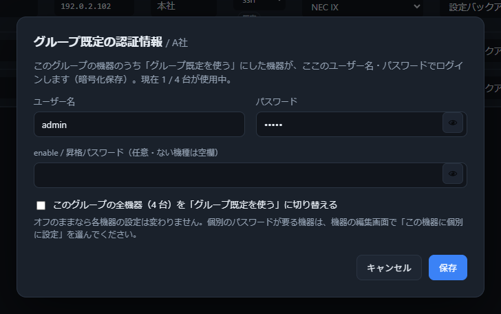
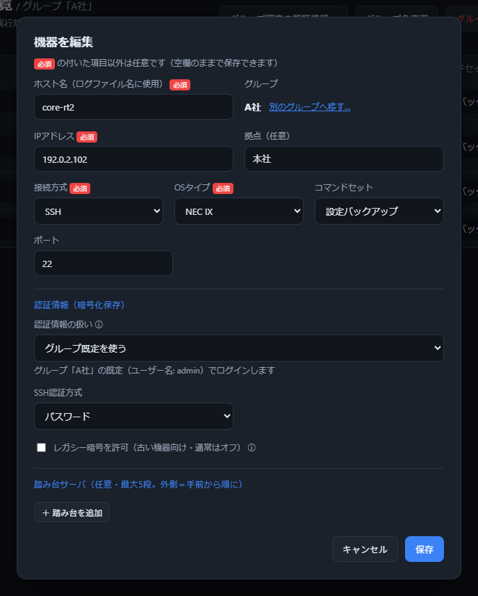
保存時に、IPアドレスの形式（例: 192.168.1111.1 のような明らかに不正な値は拒否）・必須項目・
ポート番号の範囲などを自動でチェックし、問題があればメッセージを出して保存しません。
入力途中に画面の他の場所を押しても内容は消えません（「キャンセル」か「保存」を押すまで保持されます）。
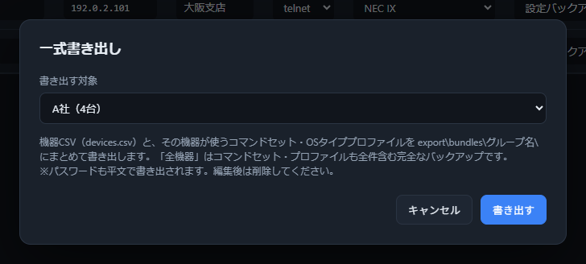
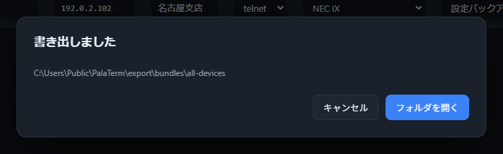
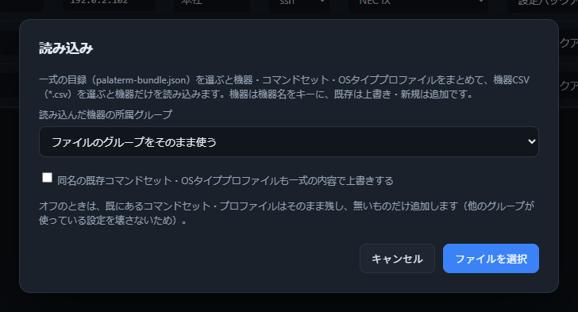
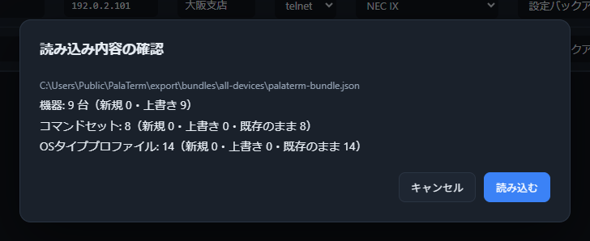
「一式書出」は、対象グループ（または全機器）の機器CSV（devices.csv）と、その機器が使うコマンドセット・OSタイププロファイルを
export\bundles\グループ名\ にまとめて書き出します。「全機器」を選ぶとコマンドセット・プロファイルも全件含む完全なバックアップになります。
別の PalaTerm へ持ち込むときは、そのフォルダをコピーして「読込」で中の palaterm-bundle.json を選びます。
機器が多いときは、書き出した devices.csv を Excel 等でまとめて編集し、「読込」で CSV 単体を選べば機器だけを読み込めます（機器名をキーに、既存は上書き・新規は追加。読み込んだ機器をまとめて特定グループへ割り当てることも可能）。
読み込む前に確認画面で新規・上書き・既存のまま残す件数が表示されます。同名のコマンドセット・プロファイルは既定では既存を残し（他のグループが使う設定を壊さないため）、チェックを入れた場合だけ上書きします。
CSVにはパスワードが平文で書き出されます。編集が終わったらCSVファイルは速やかに削除してください（暗号化保存されるのはツール内の data\palaterm_vault.enc だけです）。
グループを選び、チェックした機器へ並列接続してコマンドを流し、ログを保存します。
_before / _work / _after が付き（この 3 語はログ設定で変更できます）、実行履歴で作業前と作業後を比較できます。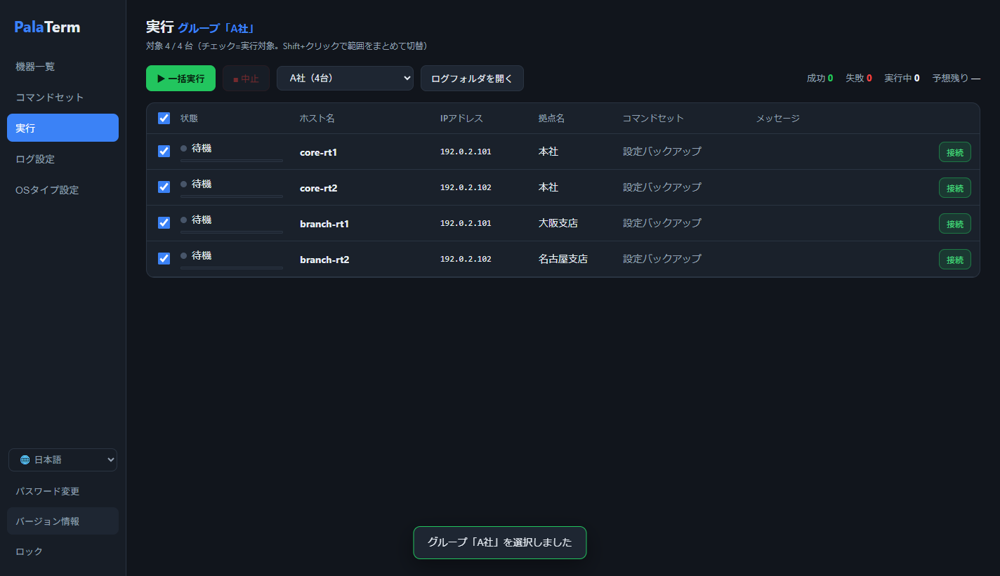
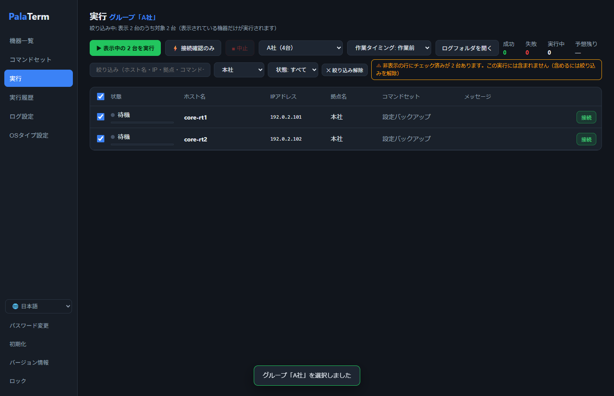
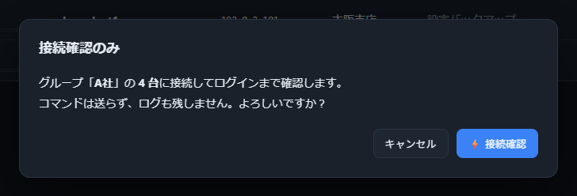
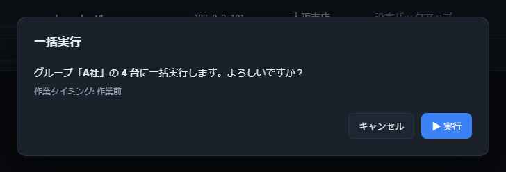
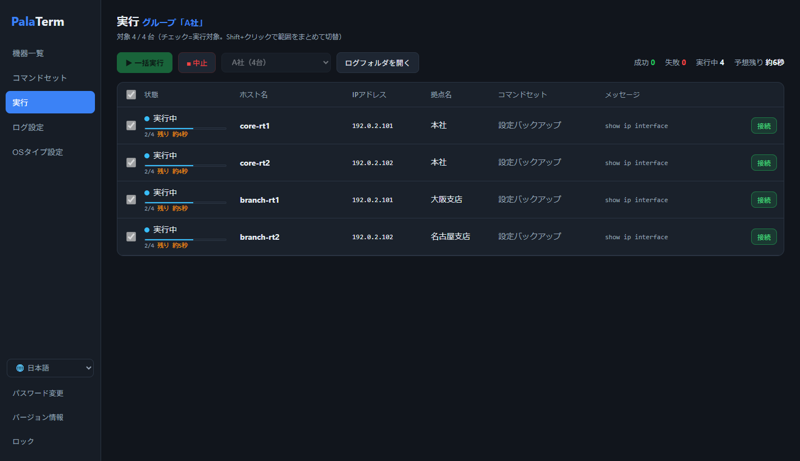
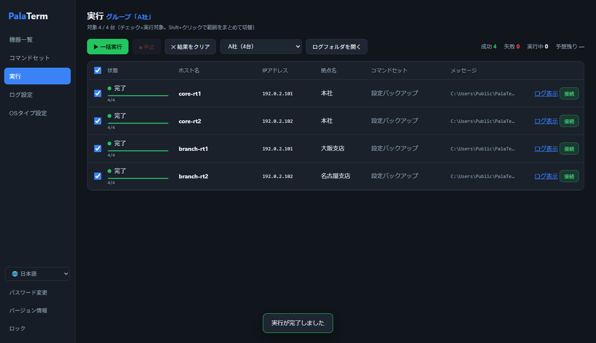
設定を変更するコマンドの事前警告: コマンドセットに conf t / write / reload / no … / erase など機器の設定や状態を変えるコマンドが含まれていると、実行前にそのコマンドを列挙した警告が出ます。「変更を伴うことを理解したうえで実行します」にチェックしないと実行ボタンは押せません。show 系だけのセットでは出ません。
状態は次のように表示されます。
接続中 ログイン中 実行中 完了 エラー
実行中は、各機器の状態の下にプログレスバーが表示され、コマンドの進み具合（完了数/全体数）と、その機器の残りコマンドがすべて終わるまでの残り時間（設定した待機秒＋これまでのコマンド所要時間からの概算。最初の1コマンドが終わるまでは「計測中…」）が機器ごとに見えます。 右上には成功 / 失敗 / 実行中の件数に加えて予想残り時間が表示されます （完了済みコマンド数と経過時間からの概算で、実行が進むほど精度が上がります）。 途中で止めたいときは「■ 中止」を押します（確認のうえ、接続待ちの最中でも即座に止まります）。
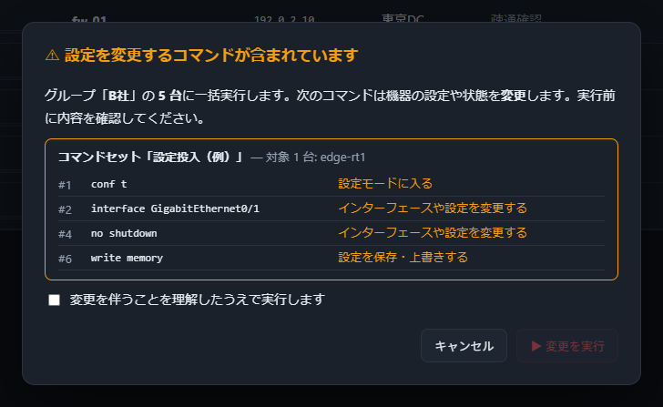
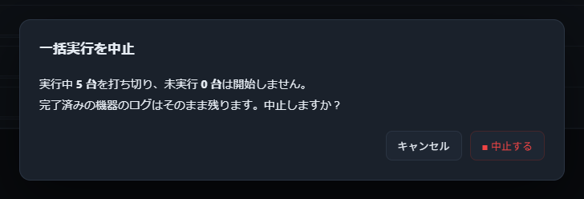
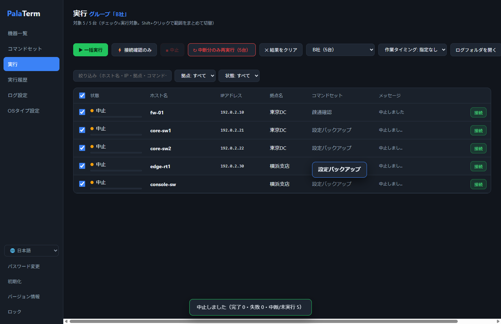
中止すると、実行中だった機器は打ち切られ、まだ始まっていなかった機器は開始されません。どちらも状態欄に中止と表示され、 完了済みの機器のログはそのまま残ります。そのあとは次の3つから選べます。
実行後にエラーの機器があると、「↻ 失敗のみ再実行（n台）」ボタンが現れます（中止で止まった機器もあれば「失敗・中断のみ再実行」）。 認証情報や設定を直してからこれを押せば、その機器だけをもう一度実行できます。
同時に接続する台数は「ログ設定」タブの最大並列数で調整できます（既定10台）。台数が多くても並列実行されるので、全体の待ち時間は「一番遅い1台」の時間で済みます。実行中は二重実行できません。また実行中に設定を変えても、動いているバッチには反映されず次回から有効です。
1台の機器にログイン処理まで自動で済ませ、そのまま手動操作に引き継ぐモードです。
一括実行とは別に、その場で1台を操作したいときに使います。機器一覧または実行タブの各行の 「接続」ボタンを押すと、PalaTerm がその機器へ接続し、OSプロファイルに沿って ログイン・enable昇格・ページャ無効化まで自動で行った状態の端末画面が開きます。
exit で機器から抜けるか、ウィンドウを閉じて終了します。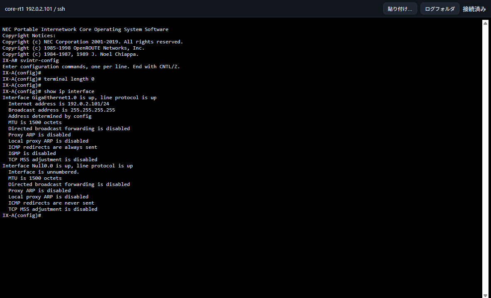
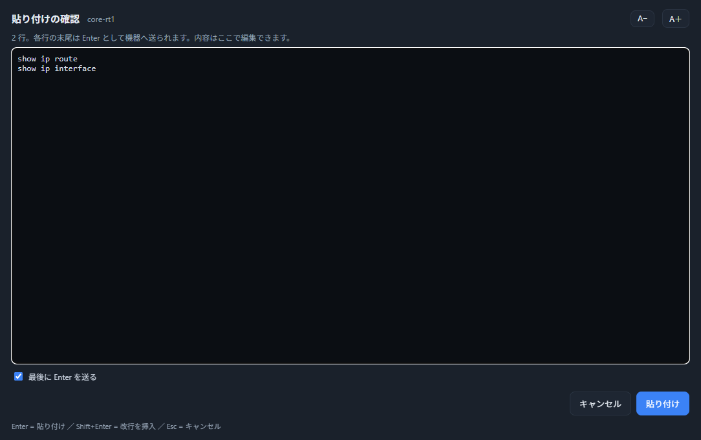
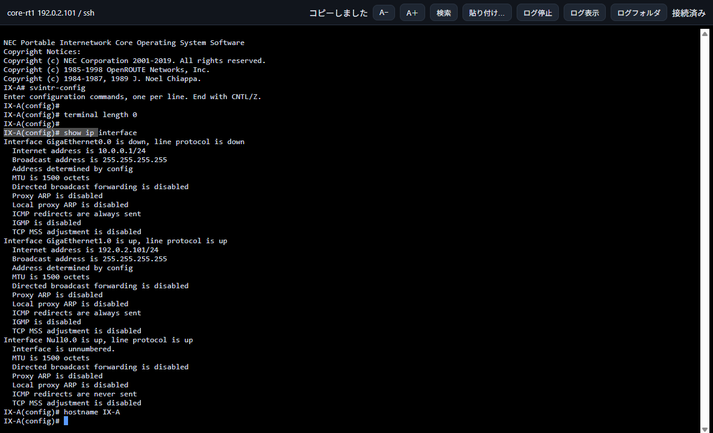
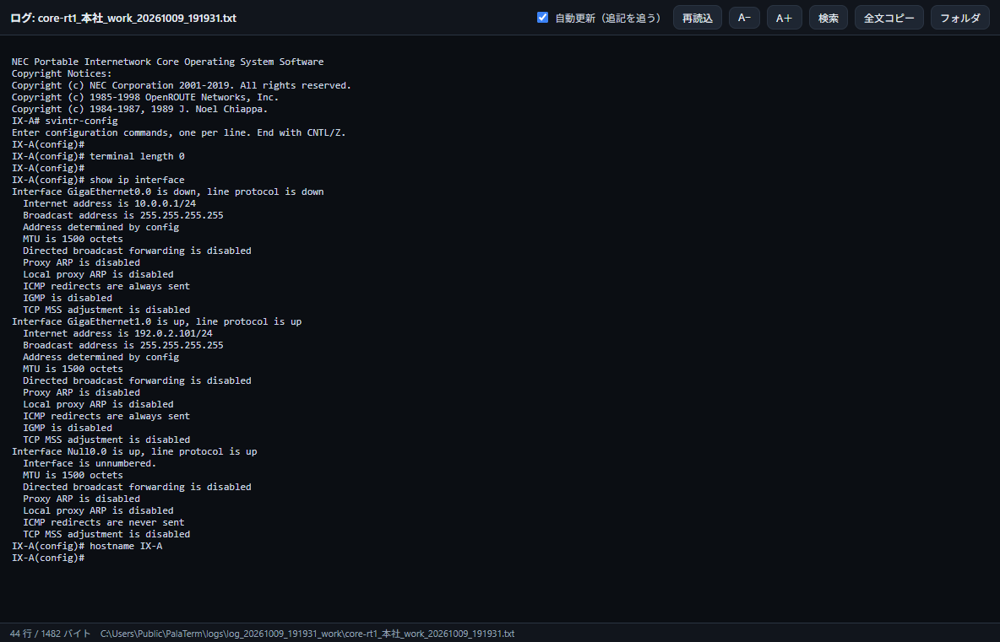
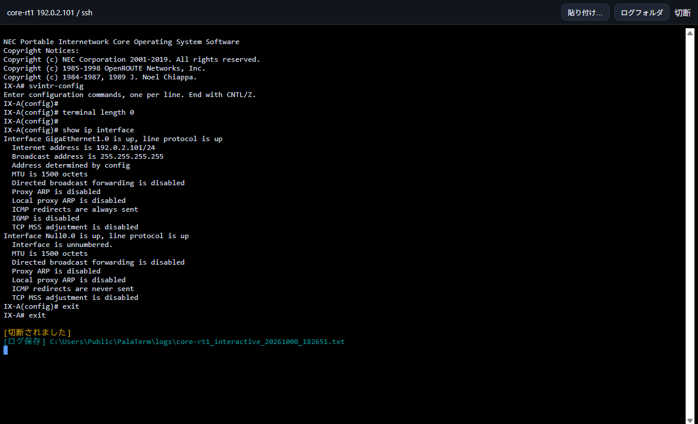
複数の機器へ同時に別々のウィンドウで接続できます。 それぞれ独立したウィンドウなので、並べて同時作業が可能です。踏み台（最大5段）経由でも自動で通り抜けます。対話接続の内容もログファイルに保存されます（切断時に保存先が画面末尾に表示）。
次のような機器では、OSプロファイルの自動ログインが進みません。
そのための入口が 3 つあります。いずれもログは通常の対話接続と同じく保存されます。
過去の一括実行を一覧し、作業前と作業後のログの違いを機器ごとに確認します。
一括実行のたびに、ログフォルダ内の log_日時[_作業タイミング]/ に palaterm-run.json（グループ・作業タイミング・機器ごとの成否とログファイル名）が残り、左サイドバーの「実行履歴」に新しい順で並びます。
show clock の時刻や uptime、トラフィック量のように取るたびに変わる値を差分扱いにしません。「差分の周辺だけ表示」で変わった行とその前後 3 行だけに絞れます。Esc で閉じます。show 系・exit/end・write などは除外）、作業後のログ（show running-config など）にその行があるかを 1 件ずつ照合します。no … は、その行自体が設定に残る機器（NEC IX・Juniper など）ではその行があれば、Cisco のように対象の行が消える機器では消えていれば反映です。機器ごとに「✅ n 件すべて反映／⚠ m / n 件が未反映」と各行の ✓ ✗（＝は作業前からあった行）を表示し、全体の結論は「作業中に設定した内容（c 件）が、作業後に全 n 台で反映されています」／「…のうち m / c 件が、作業後に反映されていません」です。作業後の取得に show running-config 相当のコマンドを含めておいてください。A と B を選ぶと、その間の作業は自動で候補に入ります。作業前に「作業タイミング: 作業前」で取得 → 作業 → 「作業後」で取得、という流れにしておくと、A / B を選ぶ手間なく比較できます。「指定なし」で取ったログ同士も比較できます（palaterm-run.json が無い古いフォルダはファイル名から機器名を推定します）。
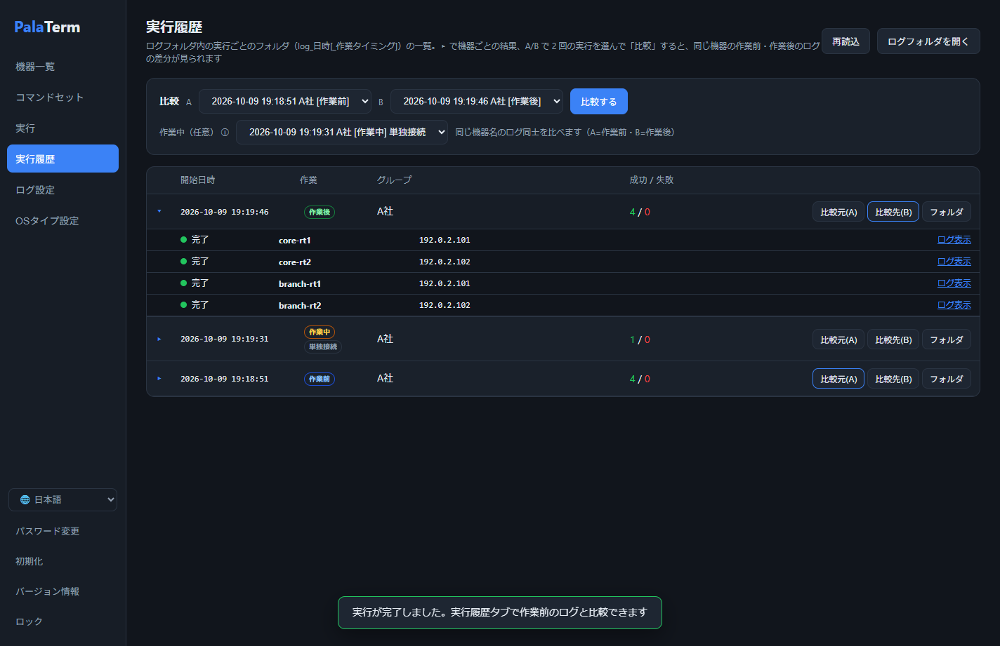
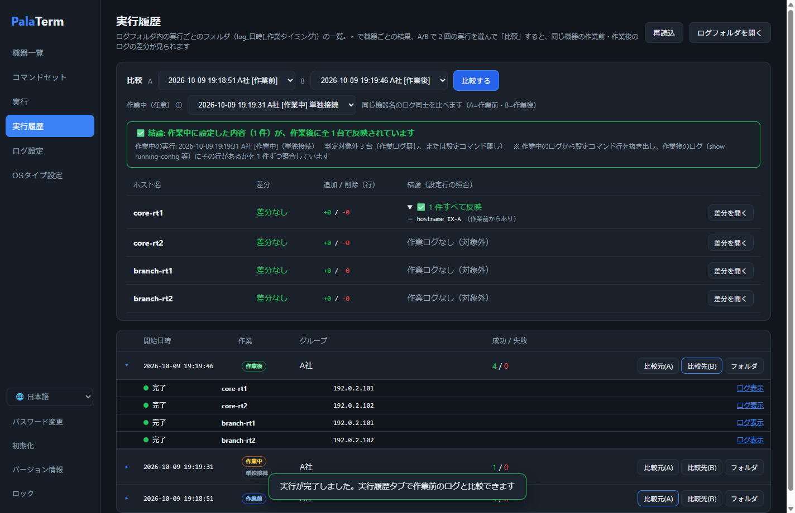
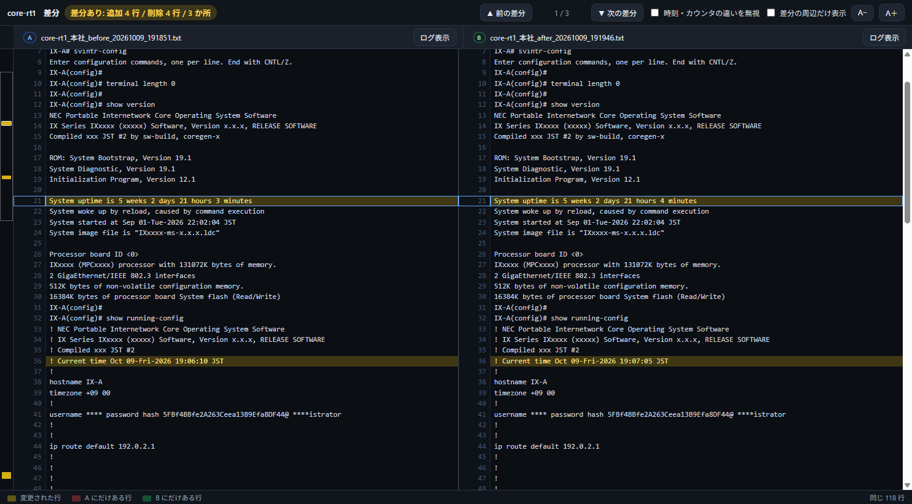
取得したログは自動でファイル保存され、その場でも確認できます。
実行が終わると、各機器の行に「ログ表示」が出ます。クリックすると、その機器のログが別ウィンドウで開きます（検索・文字サイズ・全文コピー・再読込。対話接続のツールバーの「ログ表示」なら書き込み中のログを自動で追います）。 実際のファイルは、「ログフォルダを開く」ボタンでエクスプローラーから確認できます。
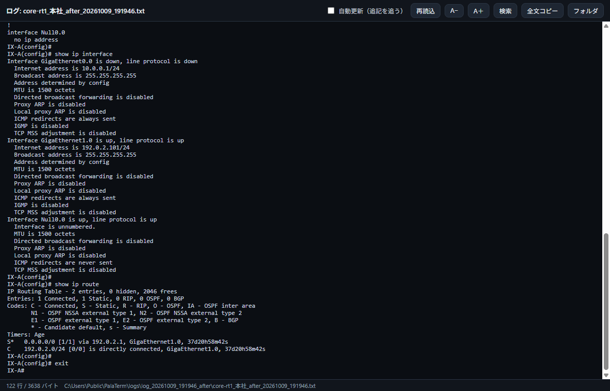
実行するたびに、ログフォルダの中に実行ごとのフォルダ（既定 log_日付_時刻[_作業タイミング]/）が作られ、その中に機器ごとのログが入ります。フォルダ名も「ログ設定」のログフォルダ名テンプレートで変えられます（使える変数: {date} {time} {hhmm} {group} {stage}。例: {date}_{group}_{stage} → 20261009_A社_before。同名のフォルダが既にあれば _2, _3 … が付きます）。ファイル名の既定は次の形式です。
作業タイミングを指定しないと {stage} は Config、作業中と対話接続は work、作業前／作業後は before / after になります。この 3 語は「ログ設定」の作業タイミングの付与文字列で変えられます（空欄なら既定。改名しても、以前の既定語で作られたフォルダは実行履歴でそのまま判別されます）。拠点・役割が空の機器では {site} / {role} の分は詰められます。以前の既定（{host}_Config_{date}_{time}.txt・{host}_{site}_{stage}_{date}_{time}.txt）のままの設定は、ロック解除時に自動で新しい既定へ移行します（変更済みのテンプレートは触りません）。
対話接続（1台に手動ログイン）のログも同じ名前で log_日付_時刻_work/ フォルダに入り、実行履歴に「単独接続」として並びます。
ファイル名テンプレートは「ログ設定」タブで変更でき、次の部品が使えます（クリックでコピーできます）。
| 部品 | 意味 |
|---|---|
{host} | ホスト名（機器の名前） |
{ip} | IPアドレス |
{os} | OSタイプ |
{group} | グループ（会社） |
{site} | 拠点名 |
{role} | 役割（機器編集の「役割（任意）」） |
{stage} | 作業タイミングの付与文字列（既定 before / work / after。「ログ設定」で変更可）。テンプレートに無いときはファイル名の末尾に _before 等が自動で付きます |
{date} | 日付（yyyymmdd） |
{time} | 時刻（hhmmss） |
{hhmm} | 時刻（hhmm） |
実行とログ保存の共通設定です。
| 項目 | 説明 |
|---|---|
| 最大並列数 | 同時に接続する台数。0 で無制限。既定10。 |
| 接続タイムアウト | 接続確立を待つ秒数。既定20秒。 |
| コマンドタイムアウト | 1コマンドの応答（プロンプト復帰）を待つ秒数。既定30秒。 |
| ログ保存フォルダ | ログの出力先。既定 logs。「参照…」でフォルダ選択もできます。相対パスは PalaTerm.exe と同じフォルダが基準です。 |
| ログフォルダ名テンプレート | 実行ごとのフォルダ名。{date} {time} {hhmm} {group} {stage} が使えます（既定 log_{date}_{time}_{stage}）。 |
| 作業タイミングの付与文字列 | {stage} に入る語を作業前／作業中／作業後ごとに指定します（既定 before / work / after。空欄なら既定）。空白や \ / : * ? " < > | は使えず、3 語は互いに異なる必要があります。 |
| ログファイル名テンプレート | 上記の部品でファイル名を組み立て。 |
| アイドル時の自動ロック | マウス・キーボード操作がこの分数なければ自動でロック画面に戻ります。既定 30 分、0 で無効。一括実行中はロックしません（対話接続ウィンドウは別プロセスのため影響しません）。 |
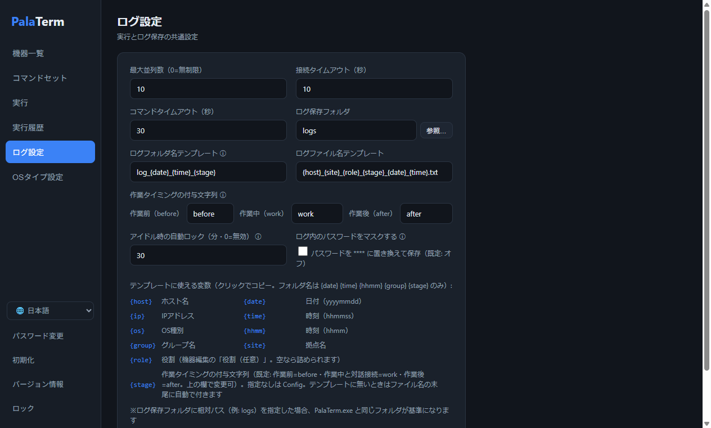
変更したら「保存」を忘れずに。未保存のまま他のタブへ移ろうとすると確認が出ます。
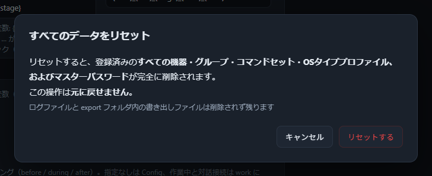
左メニュー下部の「初期化」を押し、2 回の確認に答えると、登録済みのすべての機器・グループ・コマンドセット・OSタイププロファイル・マスターパスワードを削除して初期状態に戻します（元に戻せません）。
実行には、警告ダイアログでの確認に加えてマスターパスワードの入力が必須です。ログファイルと export フォルダの書き出しファイル（一式書出のフォルダ・標準プロファイルのJSON）は削除されずに残るため、必要ならそこから読み込みで復元できます（事前に「全機器」で一式書出しておけば、そのフォルダひとつで元に戻せます）。
機種別のログイン自動化（プロファイル）の管理画面です。標準15種はそのまま使え、編集も自作もできます。
OSタイププロファイルは「接続してからコマンドが打てる状態になるまで」と「切断」を自動化する手順書です。 標準の15種が最初から入っています（新しい版で増えた標準プロファイルは、既存の設定を開いたときに 1 回だけ追加されます。削除すれば以後は戻りません）。
一覧では標準・自作の区別なく、どのプロファイルも「編集」「複製」「削除」できます （機器が使用中のプロファイルは削除できません）。標準を機種の実情に合わせて直したいときは、そのまま編集するか、複製してから直します。
待つ文字（プロンプト・expect）は正規表現ではなく、画面に出る文字をそのまま書きます。
文字の一部が画面に現れた時点で一致します（部分一致・大文字小文字は区別）。
たとえば assword: と書けば Password: にも password: にも一致します。
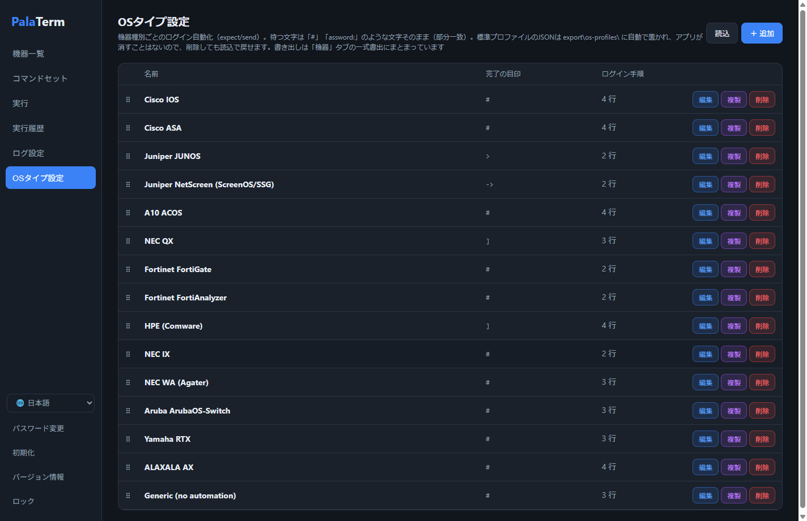
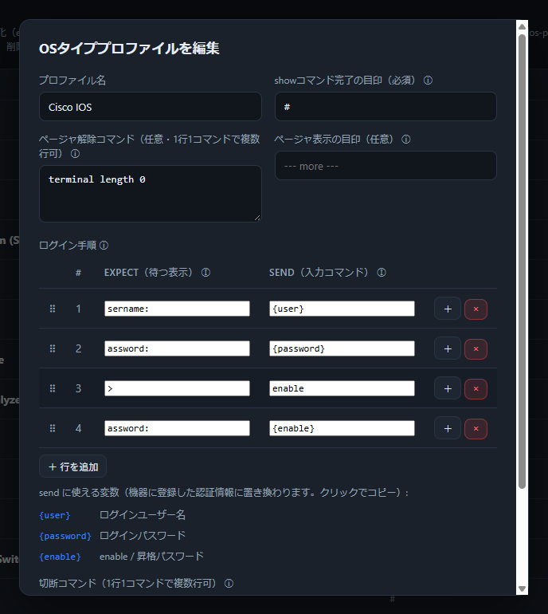
| 項目 | 説明 |
|---|---|
| showコマンド完了の目印 必須 | コマンドが打てる状態のときに機器が出す表示（例: Router#）。コマンド送信後、これが再び現れたら「出力が終わった」と判定して次のコマンドを送ります。# のように末尾の記号だけ書いておけば、設定モードのプロンプト（例: FG(console)#）にも一致します。 |
| ログイン手順 | 上から順に実行。expect（待つ表示）が出るのを待ち、send（入力コマンド）を入力します。sendには変数 {user} {password} {enable} が使え、機器に登録した認証情報に置き換わります。最後の行の入力が終わると自動で「showコマンド完了の目印」を待つため、目印を待つだけの行は不要です。 |
| 認証行の自動スキップ | {user} / {password} / {enable} を送る行は、その表示を出さない機器・接続方式では自動でスキップされます（SSH直接続では認証済みのため {user} / {password} の行は即スキップ）。手順に書いておけば、聞かれる機器では入力され、聞かれない機器では飛ばされる——同じプロファイルがSSH / Telnet / シリアルで共通に使えます。 |
| ページャ解除コマンド（任意） | ログイン直後に流す、出力の一時停止（--More--）をなくすコマンド。複数行OK（設定モードに入る手順ごと書けます）。機器側で設定済みなら空欄で。 |
| ページャ表示の目印（任意） | 出力の途中一時停止の表示（例: --- more ---）。これが出たらスペースを送って続きを表示します。解除コマンドで止まらないOSだけ設定します。 |
| 切断コマンド | 実行終了時にログアウトのため送るコマンド。1行1コマンドで複数行可（exitを2回打つ機器は2行書く）。 |
「読込」でJSONを選んで取り込みます。標準15種のJSONは起動時に export\os-profiles\ に自動で置かれ、
アプリがこれらのファイルを消すことはありません。標準プロファイルを削除しても、対応するJSONを読み込めばいつでも元どおり復元できます（機器からの参照も戻ります）。
自作プロファイルの書き出しは機器一覧タブの「一式書出」にまとまっています（機器が使うプロファイルが export\bundles\グループ名\os-profiles\ に入り、「全機器」なら全件）。
特定の機種でログインが途中で止まる場合は、その機種の実際のプロンプト表示を確認し、プロファイルの「目印」やログイン手順を実機に合わせて直してください。迷ったら対話接続で実機の表示を見るのが確実です。
認証情報と通信を守るための仕組みと、知っておくべき注意点です。
| 仕組み | 説明 |
|---|---|
| 保存データの暗号化 | 機器のパスワード類はすべて AES-256-GCM で暗号化して保存します（鍵はマスターパスワードから scrypt で導出）。平文保存モードはありません。 |
| SSHホストキーの記録と検証 | SSH接続先のホストキーは初回接続時に記録され、以後の接続で一致を検証します（なりすまし・中間者攻撃対策）。キーが変わると接続を拒否し、「ホストキーが前回と異なります」の確認が出ます（対話接続ではウィンドウ内に、一括実行ではその機器の行に「鍵を許可して再実行」）。機器の交換・OS再インストールで正当に変わった場合だけ「機器を交換したので許可」を選ぶと、記録を更新して接続し直します。心当たりがないのにキーが変わった場合は許可せず、ネットワーク管理者に確認を。 |
| 強い暗号方式が既定 | SSHの鍵交換・暗号は既定で強い方式のみを使います。SHA-1系・CBC・3DESなどの旧方式は、対応していない古い機器のためだけに機器ごとの「レガシー暗号を許可」で有効化できます（通常はオフのまま）。 |
| ログのパスワードマスク（任意） | 「ログ設定」のログ内のパスワードをマスクするをオンにすると、機器のパスワード・enable パスワード・踏み台のパスワードがログに現れた箇所を **** に置き換えて保存します（一括実行・対話接続とも）。show running-config 内に同じ文字列（ユーザー名など）があるとそこも置き換わり、ログが機器の設定と一致しなくなるため既定はオフです。機器は入力したパスワードをエコーしないので、オフでも入力値はログに残りません。 |
よくあるつまずきと対処です。
「WindowsによってPCが保護されました」（SmartScreen）は、未署名アプリで出る正常な挙動です。 「詳細情報」→「実行」で起動できます。一度実行すれば以降は出にくくなります。
waiting for "〜" と「待っていたのに現れなかった文字」が表示されます。
またエラーでも途中までの実機出力はログに保存されるので、その行の「ログ表示」で機器が実際に何を表示していたかを確認できます。
あとはOSタイプ設定でプロファイルの目印・手順を実機の表示に合わせて直すだけです。実行対象のオン/オフは「実行」タブに集約されています。まずグループを選ぶと、機器ごとのチェックが表示されます。
暗号化の仕様上、忘れると保存済みの機器情報は復号できません。その場合は
data\palaterm_vault.enc を削除して作り直し（機器の再登録）になります。パスワードは確実に管理してください。
覚えている状態でパスワードを変えたいだけなら、サイドバーの「パスワード変更」で変更できます。
データごとやり直したい場合は、左メニュー下部の「初期化」が同じ初期化を行えます（ロック解除中のみ・マスターパスワード入力必須）。
本番機器での利用について。 PalaTerm は設定変更コマンドも実行できます。本番機器で使う前に、必ず検証環境で動作を確認し、所属組織のルール（会社PCでの利用申請など）に従ってください。